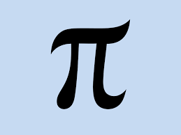

my math blog

Introduction to Mathematics and Logic
Assuming that one thing is true, you can make statements about something else being true.
Example: If I am a man, then I am a human.
Contrapositive:
Logic says that if you have some statement called p that implies q, then this is equivalent to not q implies not p. This might be helpful in certain proofs such as like below.
Lemma: if \(x^2\) is even then \(x\) is even.
Proof: Proof by contrapositive
We will prove that if \(x\) is odd then \(x^2\) is odd.
By definition of an odd number, \(x=2k+1\).
Therefore,
\(x^2=(2k+1)^2\)
\(x^2=4k^2+4k+1\)
\(x^2=2(2k^2+2k)+1\)
Therefore \(x^2\) is odd.
Square root of 2 is not a rational number
We call a number rational if it can be written as \(\frac{m}{n}\) and m,n are integers.
Assume for contradiction that \(\sqrt{2}=\frac{m}{n}\), and m is not divisible by n.
\(\sqrt{2}=\frac{m}{n}\)
\(2=\frac{m^2}{n^2}\)
\(2*n^2=m^2\)
Therefore, \(m^2\) is even.
By our Lemma, m is even.
\(2*n^2=m^2\)
\(2*n^2=m*m\)
\(2*n^2=(2k)(2k)\)
\(2*n^2=4k^2\)
\(n^2=2k^2\)
Therefore, n is even and they have a common factor.
Therefore, there is a contradiction, and \(\sqrt{2}\) is irrational.
Mathematical Induction
Two things we need for induction:
1.Base Case
2.Inductive Step
With this method we can prove things about all countable numbers 1, 2, 3…
An example: \(1+2+3+...+n = \frac{n(n+1)}{2}\)
Base case: \(n=1\)
\(\frac{1(1+1)}{2} = 1\)
Our inductive hypothesis: \(1+2+3+...+k = \frac{k(k+1)}{2}\)
We want to show that \(1+2+3+...+k+k+1 = \frac{(k+1)(k+1+1)}{2}\)
\(1+2+3+...+k+k+1 = \frac{k(k+1)}{2}+k+1 = \frac{k(k+1)}{2}+\frac{2(k+1)}{2}\) \(= \frac{k(k+1)+2(k+1)}{2} = \frac{(k+1)(k+2)}{2} = \frac{(k+1)(k+1+1)}{2}\)
We can conclude that \(1+2+3+...+n = \frac{n(n+1)}{2}\)
Sequences and Convergence
Sequence: A sequence, \(f(n)\), is a list of numbers indexed by \(n\)
Example: 2,4,8,16,32,64
\(f(n)=2^n\)
Example: \(1,-1/2,1/3,-1/4,1/5\)
\(f(n)=\frac{(-1)^{n+1}}{n}\)
Convergence: We say a sequence \(f(n)\) converges to x if \(\forall \varepsilon > 0, \exists N\) such that \(n>N \implies \mid f(n)-x\mid<\varepsilon\)